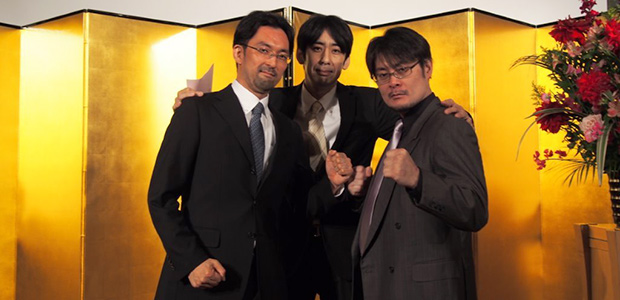
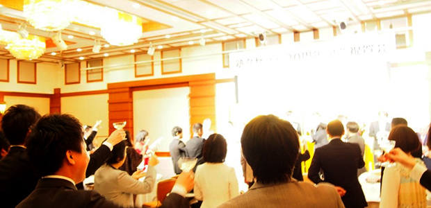
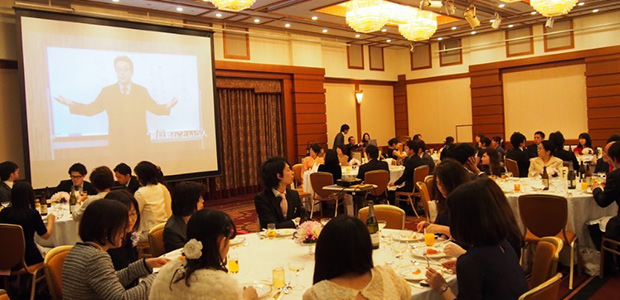
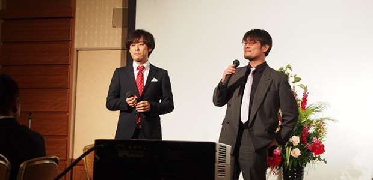
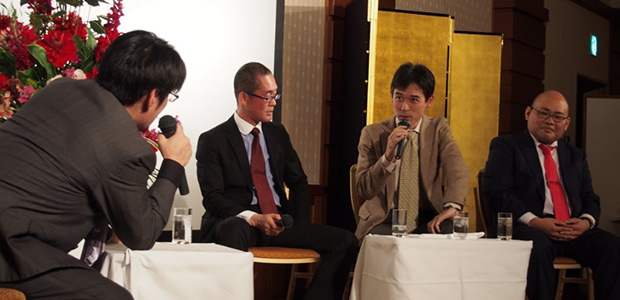
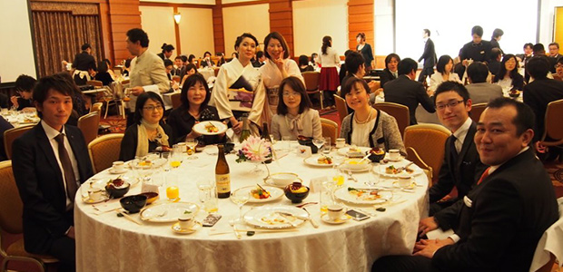

３月２１日、私が勤務している塾の３０周年記念パーティが開催されました。
私が学生アルバイト時代に一緒に働いた先生方や、かつてお世話になった方にもお会いでき、とても有意義な時間を過ごせましたので、ご報告したいと思います。
お昼、塾の職員と研究所メンバーは少し早めに現地入りし、準備。
おぉ、会場の正面にはなんと金屏風。
さっそく遊び心が発動し、ボクシング記者会見風の記念撮影（笑）。

プロモーター役は塾のＳ代表（ちなみに塾の初代代表は我が研究所所長の管野）。
私の対戦相手は、かつてのブログ（※アメブロ2014/06/25の『日記～継続は力なり～』）に登場したＳ教室長。
あのときは上杉謙信のようだった彼も美容院でツーブロックにし、今やタイのプロボクサーのように（笑）。
そんなくだらないことをしていると、開幕がせまってきまして、元職員の方々が続々といらっしゃいました。
昔話に花を咲かせながら各自テーブルにつき、いざパーティスタート。
現代表のあいさつで会場が十分に温まったところで、乾杯！

美味しい料理を楽しみながら、テーブルごとに盛り上がります。
ここで一つ目のお楽しみである映像「研究所ARCS所長管野による国語授業」が始まります。
これは職員からの要望で、ぜひ夏目漱石について語ってほしいというリクエストにより実現したもの。

この動画の撮影には私も同席しましたが、やはり管野所長の授業はオモシロイ！
当時の夏目漱石がどのような人物であったか、小泉八雲との関係はどうだったのか、時代背景や周辺知識を踏まえた管野流の解釈が深い！
昔も今も変わらない人間の弱さや魅力、普遍の真理というものを、この「こころ」という作品を通して理解することが出来ました。
…しかしここはパーティ会場。
最初は真剣に見入っていた人も「あ、普通に歓談しててイイのね」と気づき、途中からは所長の講義がBGMと化しました（笑）。
でも、これはこれで良い雰囲気でした。
あとで国語科の先生にだけは勉強として最後まで見せておくことにしましょう。
さてさて、ここで二つ目のお楽しみ「サイコロトーク！」です。
ここでMCを努めるのは…

出たぁ～、イケメン二人組（笑）。
私の隣にいるのはハセキョンことＨ教室長。
ここで想定外のことが！
私がいつになく体調が良好だったため、いつもは飲まない酒が進みまして。
この満面の笑み…（恥）。
最初からエンジン全開です。
Ｈ氏がサイコロ係で私がゲストとトークをしていくという企画。
ゲストは三名で、かつて学生時代に講師をされていた方二名（そのうちのお一人は子どもさんを塾に通わせて下さっています）と、Ｋ教室長（月イチの助っ人としてもお馴染みですね！）。
写真を見てもらえればわかりますが、ノリノリの私はぐいぐい三名へ食い込んで質問しています。

会場はかなり盛り上がって（いたようですが、その瞬間は自分テンションのせいでよく分からず…）、はるばる遠くから来てくれた方にも楽しんでいただけたかなと。
トークの内容は昔話や、塾で働いた経験が今どのように生かされているかなど、広い範囲に及びました。
そして楽しい時間はあっという間に過ぎてしまいました。
最後は塾の現代表の言葉で締め。
テーブルごとに記念撮影をして終了です。

研究所ＨＰ支配人も楽しそうにしていますね（笑）。
塾の職員も研究所の職員も、より結束が固くなったような気がします。
今年度もバリバリ働くぞ！